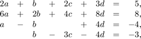
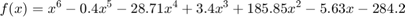
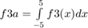
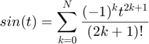

EECE 2207 Final Exam Spring 2017
Contents
Problem 1: 15 Points
Use matlab to solve the following system of equations

%%%%%%%%%%%%%%%%%% Insert Code for Problem 1 Here %%%%%%%%%%%%%%%%%%%%%%
Problem 2: 15 Points
Given the following function:

- Use matlab to solve for the values of x that make f(x) equal to 0
- Create a variable x1 with 100 equally spaced points between -5 and 5
- Evaluate f2 = f(x1) and plot the results (Label your axes)
%%%%%%%%%%%%%%%%%% Insert Code for Problem 2 Here %%%%%%%%%%%%%%%%%%%%%%
Problem 3: 15 Points
Use Matlab to evaluate and compare the results of an integral evaluation using a mathematical expression or a data vector by performing the following steps
- Create an anonymous function named f3 that implements f(x) from Problem 2
- Use Matlab to evaluate 
- Use the data in the vectors f2 and x1 and the appropriate Matlab function to approximate the above integral.
%%%%%%%%%%%%%%%%%% Insert Code for Problem 3 Here %%%%%%%%%%%%%%%%%%%%%%
Problem 4: 15 Points
The Taylor series approximation of the sin(x) is given by the following equation

Where t is in radians and N is the number of terms used in the approximation.
Write a function named f4 that implements the Taylor series approximation of the sine as follows:
out4 = f4(t,N,errSpec)
- t is the input angle vector (radians). Obviously f4 should be written to accept vector inputs.
- N is the number of terms used in the series approximation.
- errSpec controls how f4 determines the number of terms used in the approximation. If errSpec equals 0, Use N terms in the approximation. If errSpec does not equal 0, iterations continue until magnitude of the difference between the successive approxmation terms is less than errSpec
- Plot the output of Matlab's built-in function sin(t) and the output of f4 on the same plot. Include a title,labels, and a legend.
%%%%%%%%%%%%%%%%%% Insert Code for Problem 4 Here %%%%%%%%%%%%%%%%%%%%%%
Problem 5: 40 Points
Implement the following GUI to compare the results of Matlab's Interpolation and Regression Capabilities .
The GUI components and their functionality is described below
Input Data 1: Name of independent data vector
Input Data 2: Name of dependent data vector
Length: The number of interpolation and regression display points
Interpolation Method: Popup Menu to select between linear, spline, and cubic
- Regression Order:* Slider specifying the regression order. Min = 1, Max = length of independent data vector.
Display Results: Pushbutton that does the following:
a) Plot the input independent/dependent data pair with red '*'s
b) Create 'xVector'. A vector with 'Length' linearly spaced between the minimum and maximum value of the input independent data vector
c) Otain the interpolation method from the Interpolation Method popup Menu Use the presribed method to create 'intVector. Plot intVector with '-'s.
d) Obtain the regression order from the regression slider. Perfrom a regression analysis of that order on the input data pair to obtain 'regVector'. Evaluate the regVector polynomial using xVector as the input and plot the result using blue '.'s. for the plot%
- Use xVector for both the interpolation data points and the independent data vector required to evaluate the polynomial determined by the regression evaluation.
- Display all plots simultaneously.
Save Results: Pushbutton that saves xVector, intVector, and regVector to Matlab's base workspace: